Water color and colored pencil. 2016, San Diego, CA.
.jpg)
Studio Art
All artwork created by Camryn Melendez
Water color and colored pencil. 2016, San Diego, CA.
Oil Pastel. 2017, San Diego, CA. Displayed in the 2017 Young Art exhibition at the San Diego Museum of Art.
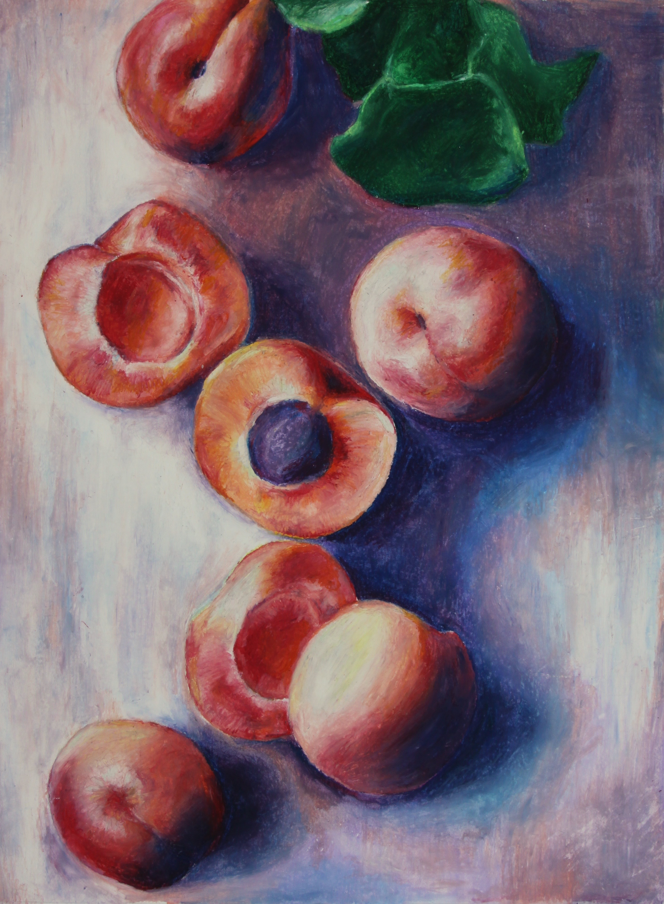Acyrylic and Water. 2017, San Diego, CA. Background created with dripping water effect and copper colored paint.

Charcoal overlay on tempera. 2016, San Diego, CA. Gold flecks created by dabbing a crumples paper towel in gold paint and stamping.
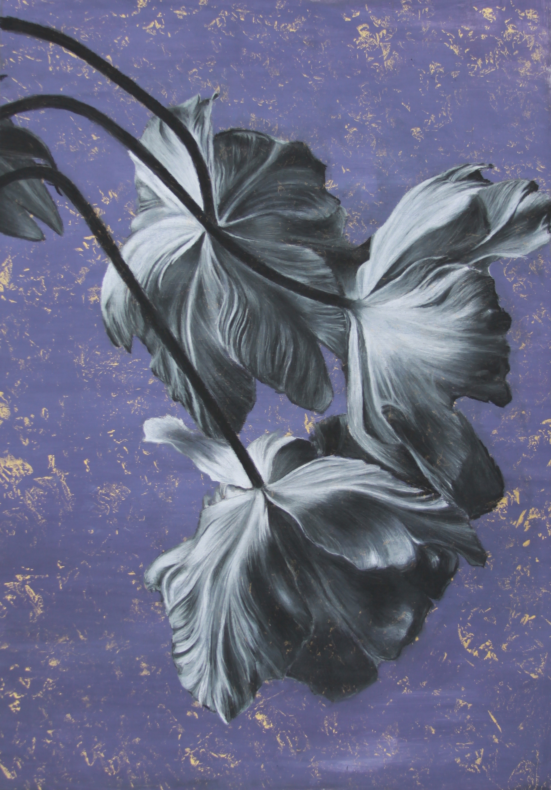Oil Pastel. 2016, San Diego, CA. Details achieved by scratching the pastel with an xacto knife, creating sharp lines.
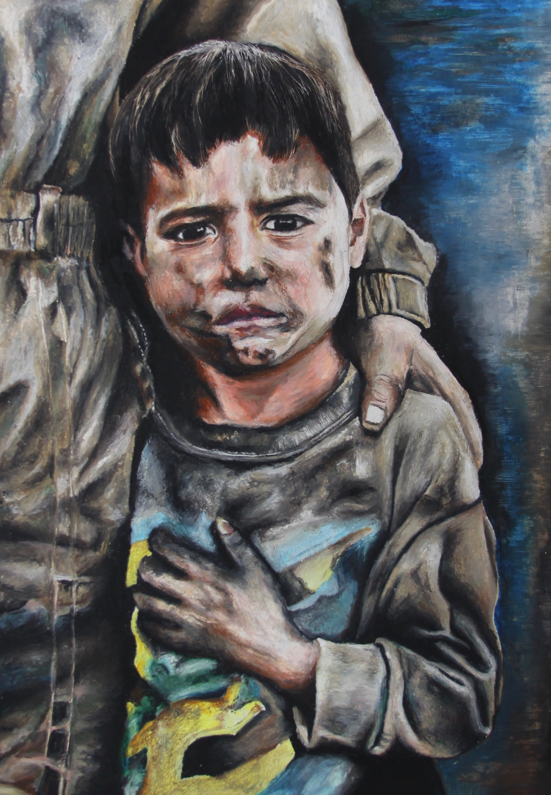Acrylic on Canvas Board. 2017, San Diego, CA.

Oil pastel and water color. 2016, San Diego, CA.
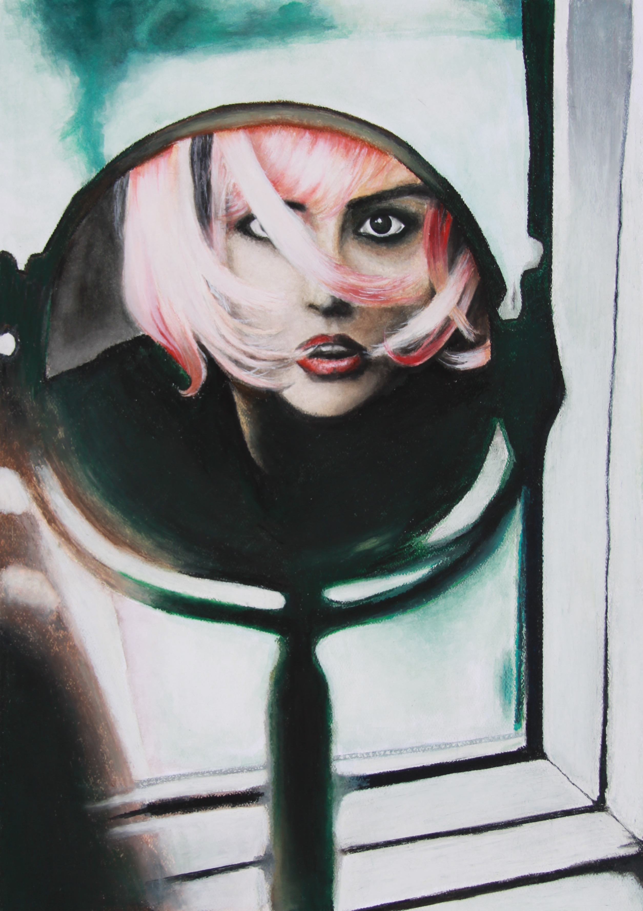Graphite. 2016, San Diego, CA.
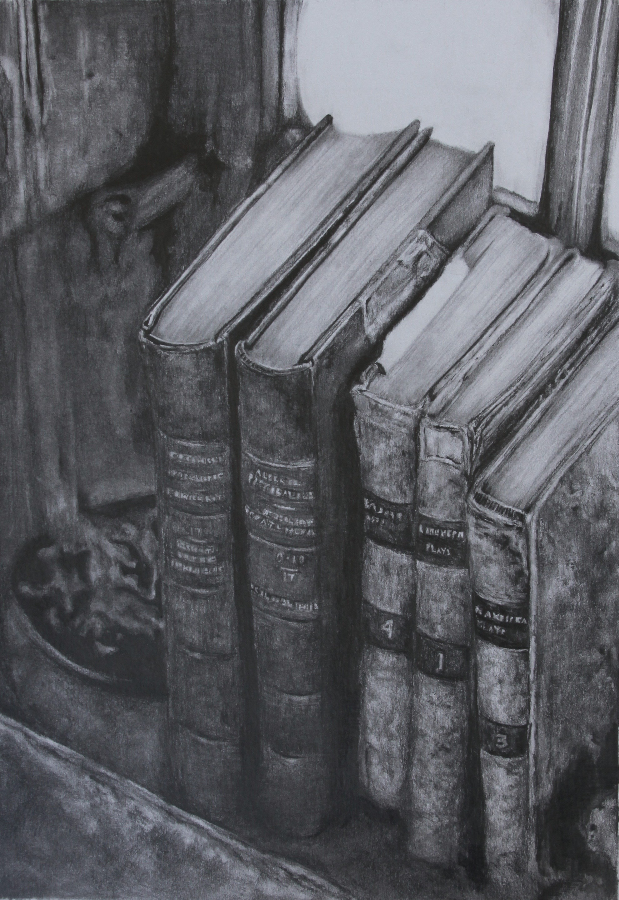Water color and colored pencil. 2017, San Diego, CA.
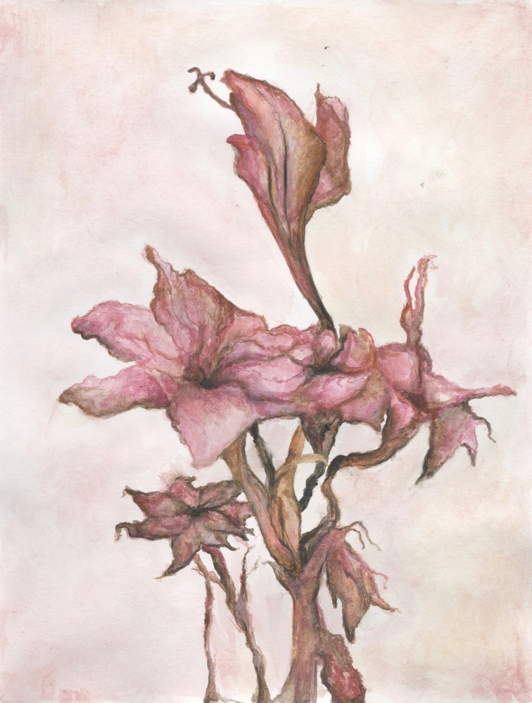Scratch board using xacto knife. 2016, San Diego, CA.
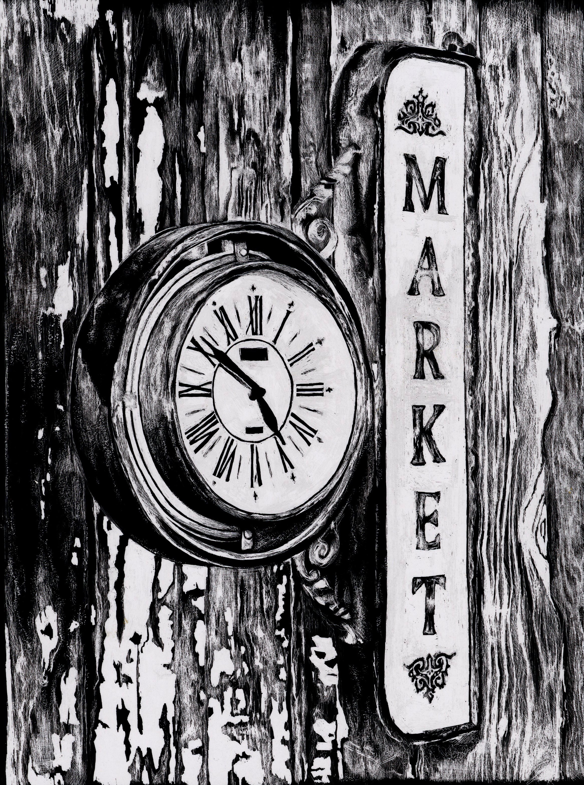Colored Pencil. 2016, San Diego, CA. Completed in 24 hours.
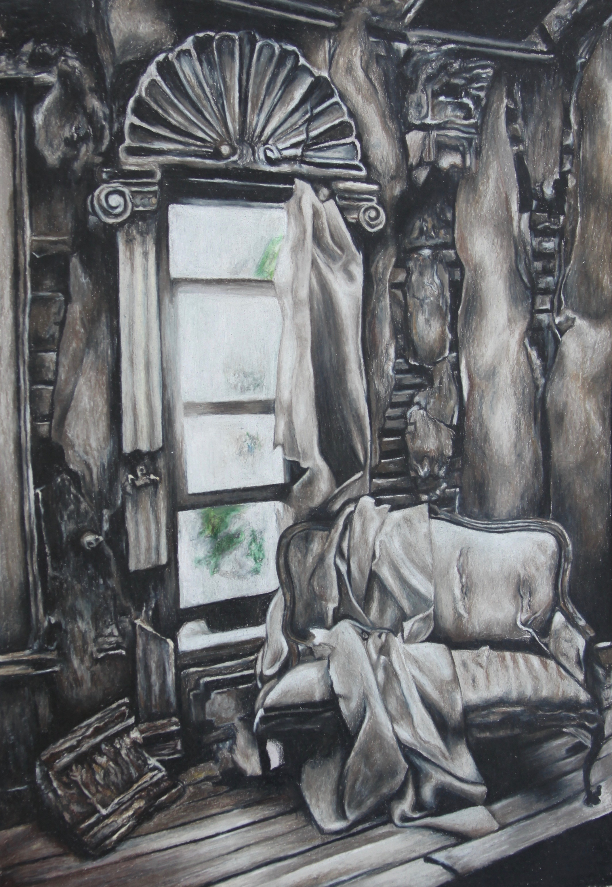Acrylic on paper. 2016, San Diego, CA.
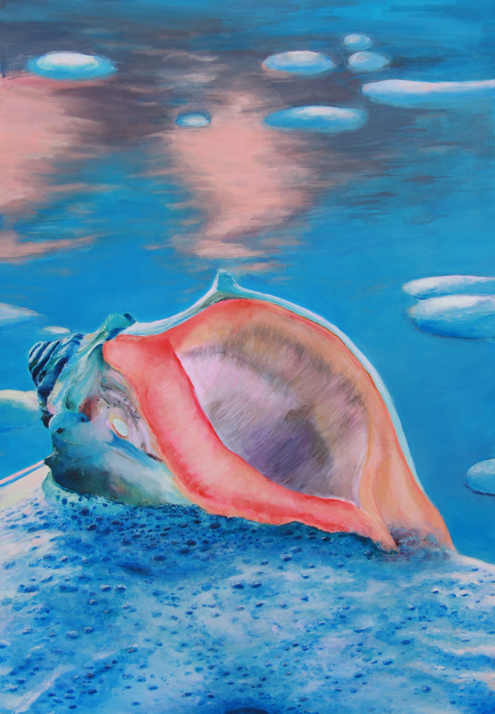Oil Pastel. 2018, San Diego, CA.
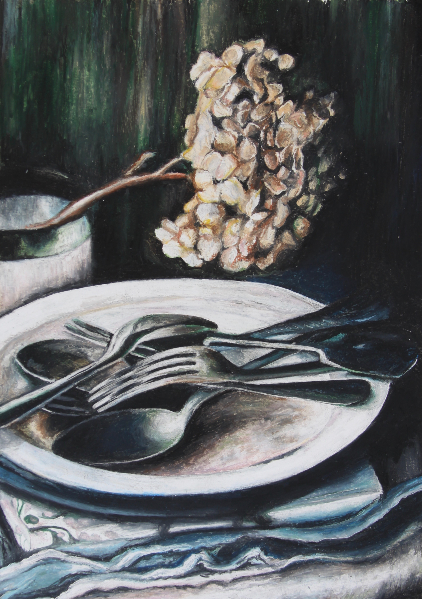Graphite. 2018, San Diego, CA.
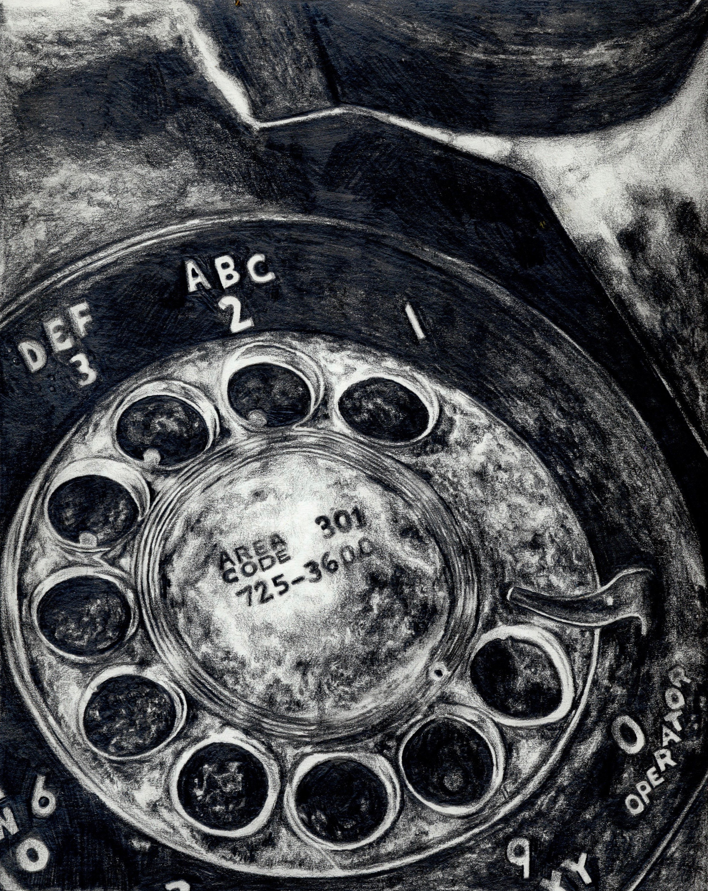